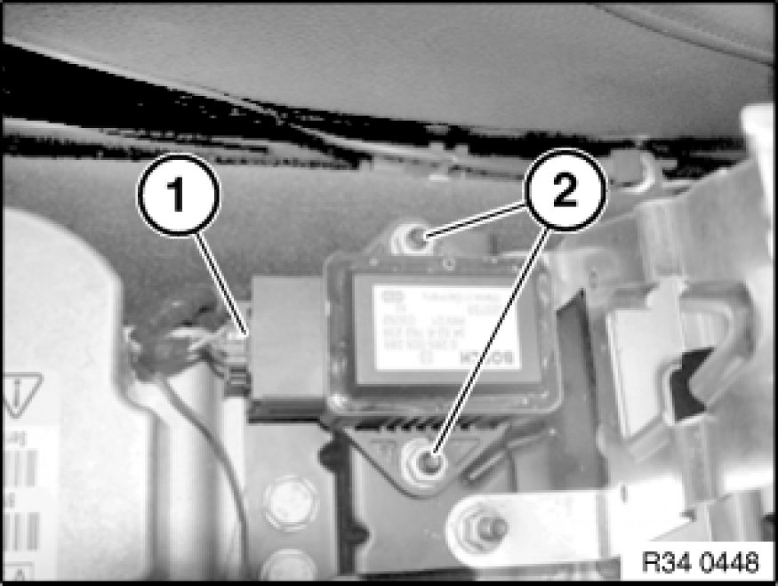

Yaw Rate Sensor: Service and Repair
34 52 550 - Removing and installing / replacing DSC sensor

Important!
Read and comply with notes on protection against electrostatic damage (ESD protection) 61 35 ... Notes on ESD Protection (Electro Static Discharge).

Necessary preliminary tasks:
- Remove storage compartment 51 16 200 Removing and Installing Storage Compartment
Note:
The DSC sensor contains the functions of the transversal acceleration sensor and the yaw sensor.

Unfasten plug connection (1).
Installation Note:
Make sure plug connection locks correctly.
Release screws (2) and remove rotation rate sensor.
Installation Note:
Tightening torque 34 51 3AZ 34 51 Slip Control System (ABS, ASC+T, DSC).

Carry out calibration/adjustment of DSC sensor.